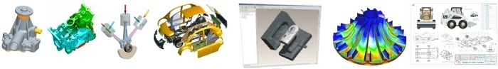
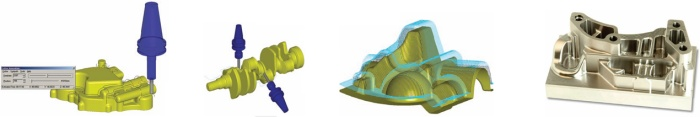

CAD/CAM Ýçin Komple Çözümlerle Tanýþmaya
Davetlisiniz! |
Üretimde Verim Seminerleri |
Pro/ENGINEER Wildfire ile tasarýmda, Pro/TOOLMAKER ile üretimde |
SINIR TANIMAYIN! |
Pro/ENGINEER - Pro/TOOLMAKER Seminerleri Programý |
|
30 Kasým 2007 |
09:30-12:30 |
ÝMES Konf. Sal. - Dudullu, ÝSTANBUL |
Yapýldý |
|
05 Aralýk 2007 |
16:00-19:00 |
ATSO - Adapazarý, SAKARYA |
|
|
06 Aralýk 2007 |
13:30-17:00 |
OSTÝM, ANKARA |
Yapýldý |
Pro/ENGINEER ile tasarýmda hýz kazanýrsýnýz!

Pro/TOOLMAKER ile üretimde veriminizi arttýrýrsýnýz!

Ýhtiyacýnýz CAM ise:
Pro/TOOLMAKER için 26 Aralýk 2007'ye kadar özel fiyat:
$8.500 + KDV |
CAD+CAM Ýstiyorsanýz:
Pro/ENGINEER Basic CAD Paketi + Pro/TOOLMAKER için
26 Aralýk 2007'ye kadar özel fiyat:
$12.250 + KDV |
Bu Fýrsatlarý Kaçýrmayýn!..
Tel: (212) 222 32 35
ÝNFOMA GROUP | ÝNFORMATÝK A.Þ.
Firmamýz ve ürünlerimiz hakkýnda daha ayrýntýlý bilgi için: www.infoma.biz
|